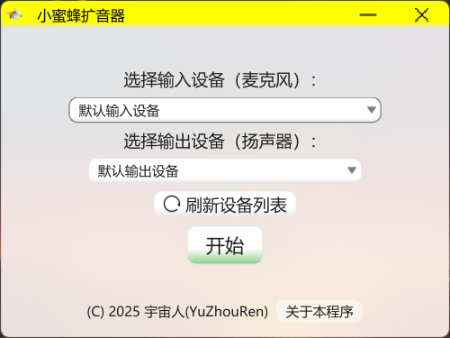

音强质清，扩听随心
振蜂而呼，声非加疾也，而闻者彰。
 下载
下载

系统要求
Windows 7+/Vista Wine 1.0+
Microsoft Store 商店需要 Windows 11/10(14393.0+)
截图

介绍
小蜜蜂扩音器是一个简洁、实用的音频放大工具，它能够实时采集麦克风声音并通过扬声器输出。
您可以在组合框中选择输入和输出设备。如果扩音功能已启动，则输入和输出设备的切换将在停止扩音后生效。
对于 Windows 7 及更新版本，您可以将鼠标悬停在任务栏中的程序图标上，等待缩略图出现，点击绿色按钮开始扩音，点击红色按钮停止扩音。